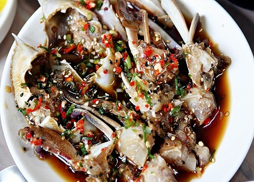
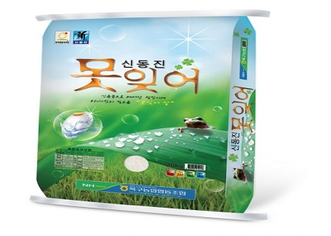
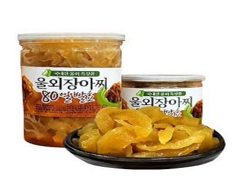

-

서해안지역은 예부터 꽃게장 어장이 성행하여 어획량이 풍부한 곳으로써 게살은 단단하고 특유의 향이 나는 것이 특징이다.
군산 꽃게장은 제철에 잡은 신선하고 통통한 꽃게와 한약재를 이용한 전통 조리법에 현대인의 입맛을 조합시킨 독특한 그 맛과 영양을 그대로 살렸다.
또한 군산 어민들은 꽃게를 저장하는 수단으로 게장을 담궈 먹던 식생활이 오늘날의 꽃게장으로 발전되어 조미료를 사용하지 않고 한약재와 각종 양념류를 혼합해서 발효함으로써 짜지 않고 비린맛이 없는 싱싱하고 우유빛나는 꽃게장은 군산 고유의 향토전통음식이다.
-

우리나라 사람들이 많이 먹는 쌀의 품종은 ‘자포니카’라는 쌀의 품종이다.
자포니카는 쌀알이 짧고 둥글면서 끈기가 있는 품종이고, 우리나라와 일본, 중국 등에서만 재배되고 있다.
전 세계 쌀 생산량의 10%에 불과하지만 밥맛만 놓고 보면 세계에서 가장 많이 먹는다는 ‘인디카’보다 뛰어나다.
자포니카의 품종의 하나인 신동진쌀은 고품질 쌀로 개발된 신품종으로서 일반쌀에 비해 쌀알이 1.3배 크고, 수분량이 낮고 단백질 함량이 낮아서 찰지며 밥맛이 좋은 것이 특징이다.
군산 신동진쌀은 완벽한 위생공정, 포장, 저온, 보관으로 햅쌀의 느낌을 그대로 유지하고 있다.
-

'울외 장아찌'는 참외과에 속하는 덩굴 식물인 울외를 소금에 절여 수분을 뺀 다음 청주 술지게미로 자연 발효시킨 식품이다.
울외 장아찌는 밑반찬으로 좋으며 단무지 대신 울외를 넣어 만든 김밥, 울외 주먹밥, 울외 빵 등으로 다양하고 맛있는 요리를 만들어 먹을 수 있는 식품이다.
군산의 울외 재배 면적은 12㏊ 정도로 전국 울외 생산량의 70% 이상을 차지하고 있다.
군산의 울외는 대부분 술지게미 절임으로 가공된다.
술지게미는 청주를 생산하고 남은 찌꺼기를 쓴다.
울외술지게미 절임을 우리말로는 울외 장아찌라고 하나, 일본 말인 나라즈케로 더 알려져 있다.
군산의 울외 장아찌는 일제 시대에 이식된 일본 음식이다.